Pour alléger la page sur l'historique de voie ferrée, je crée cette annexe avec les informations collectées aux archives départementales de Carcassonne sur les plans et décisions du viaduc de Rebuzo
 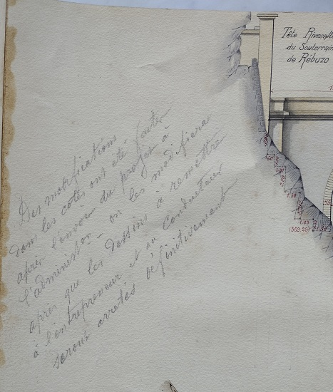
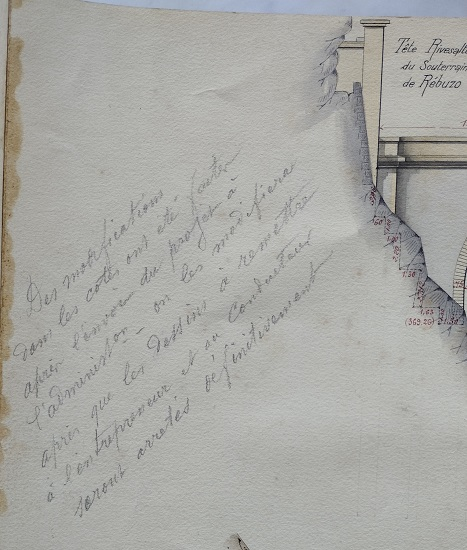


 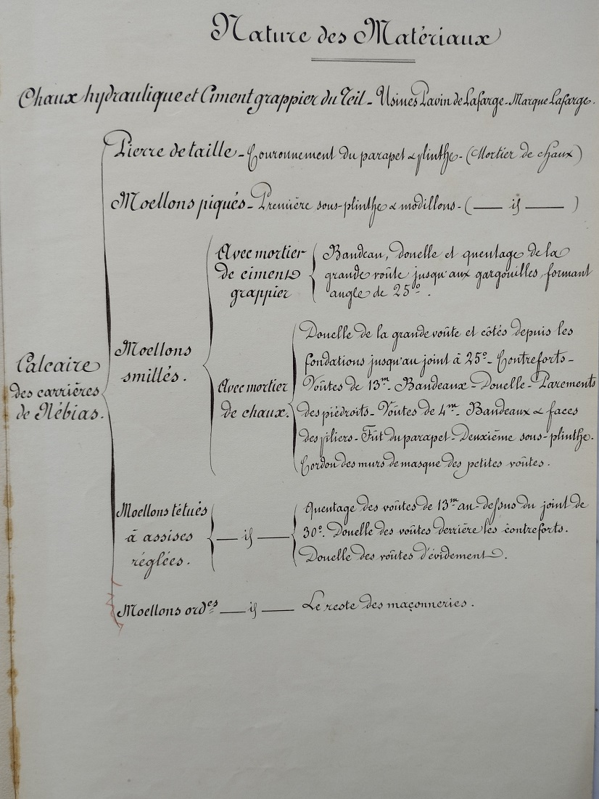
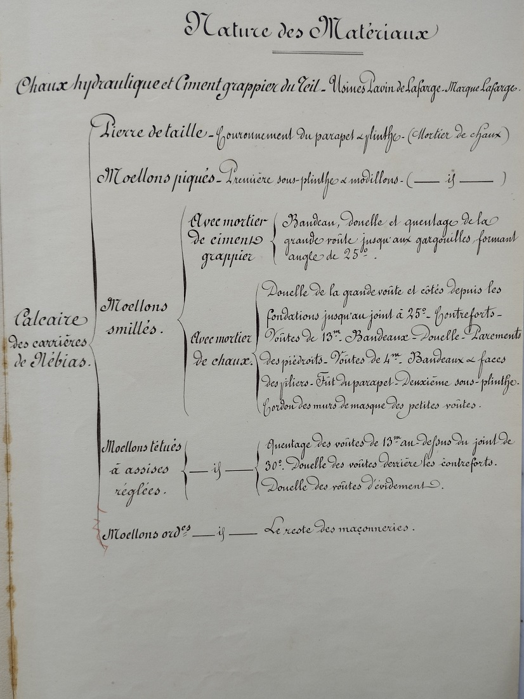
 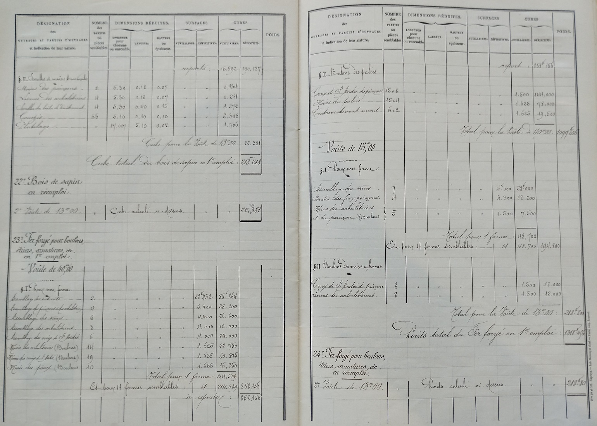
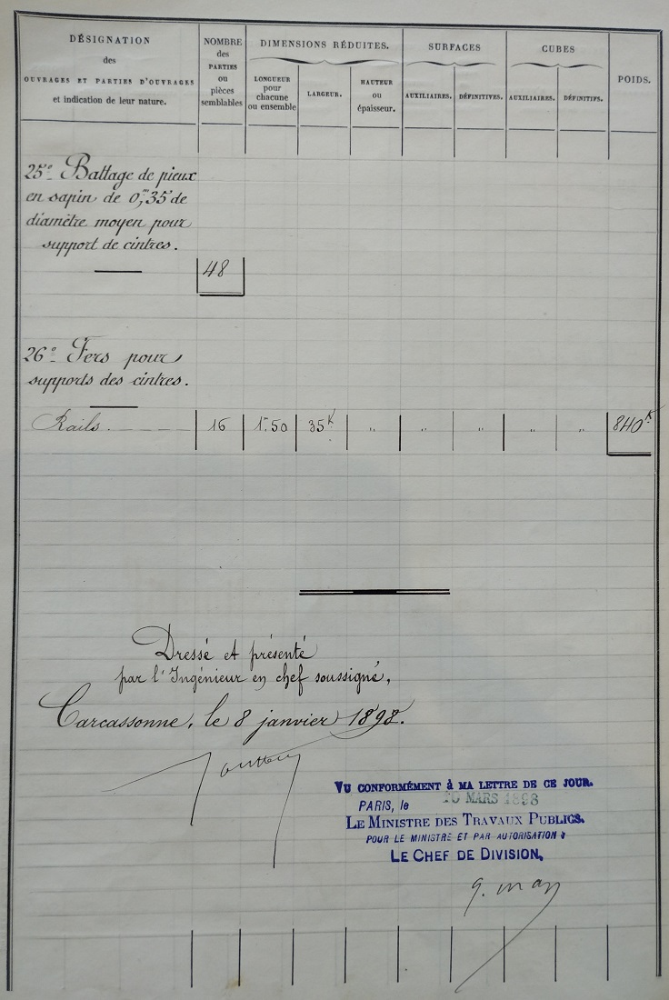
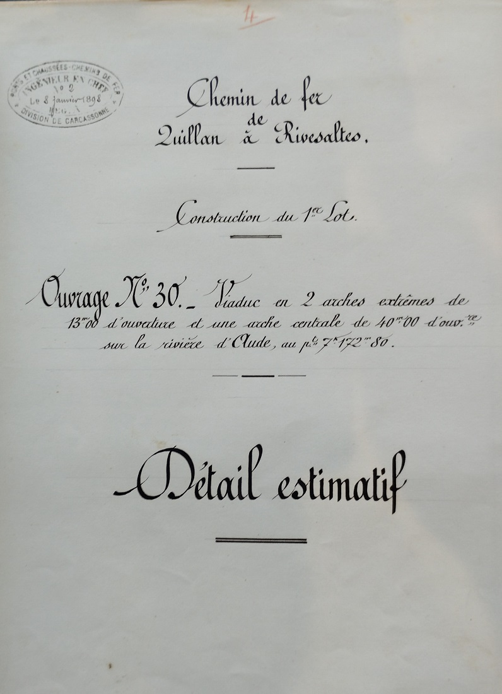
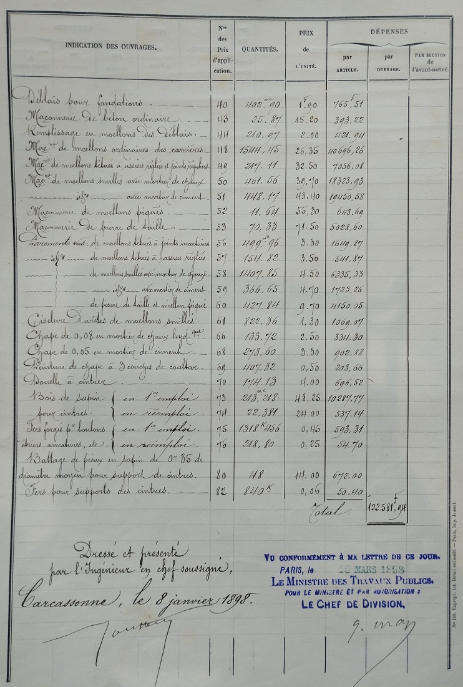
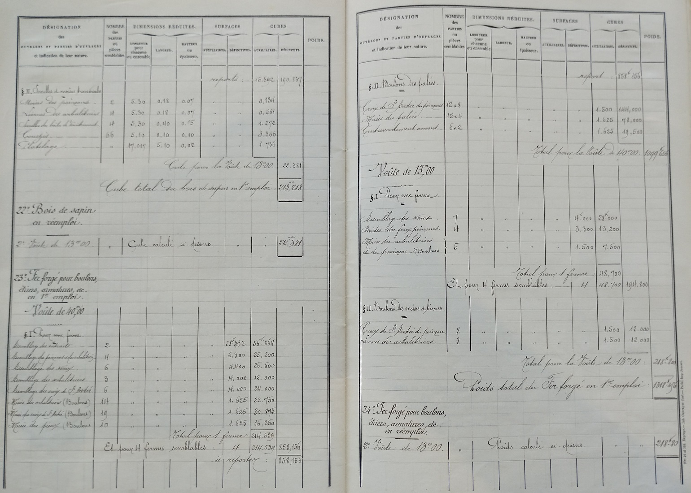
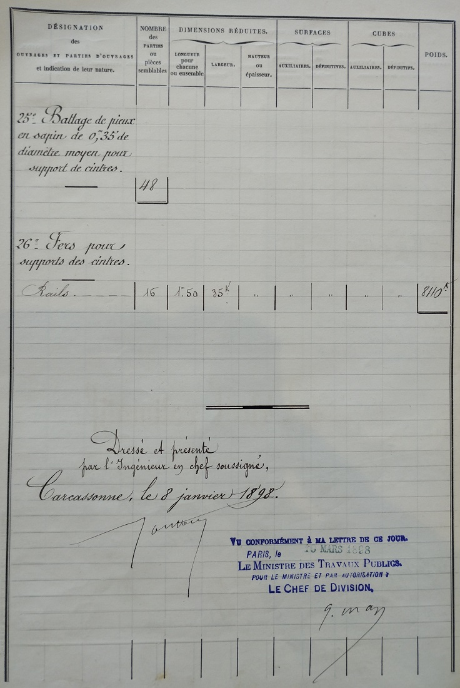
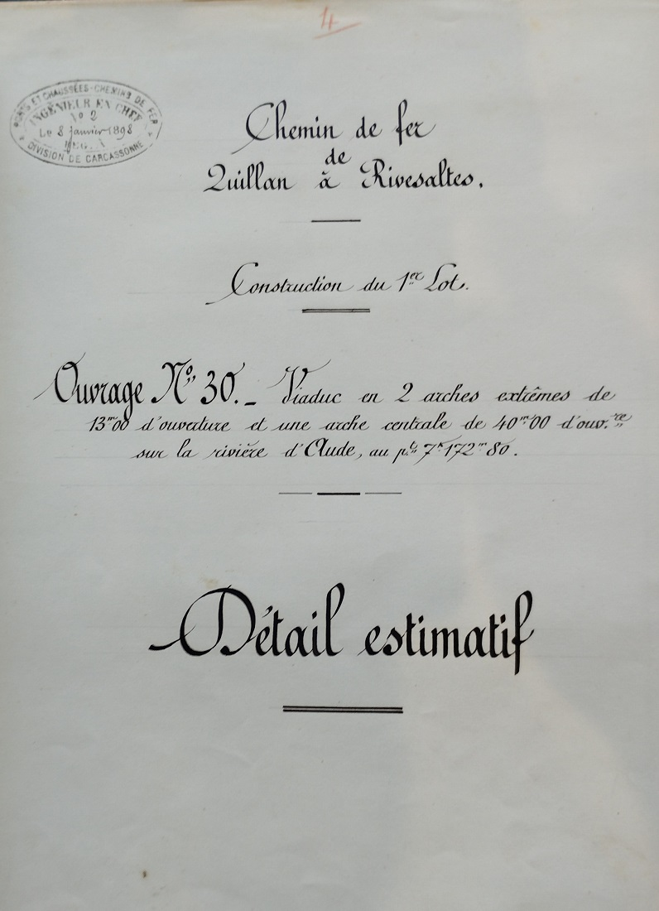
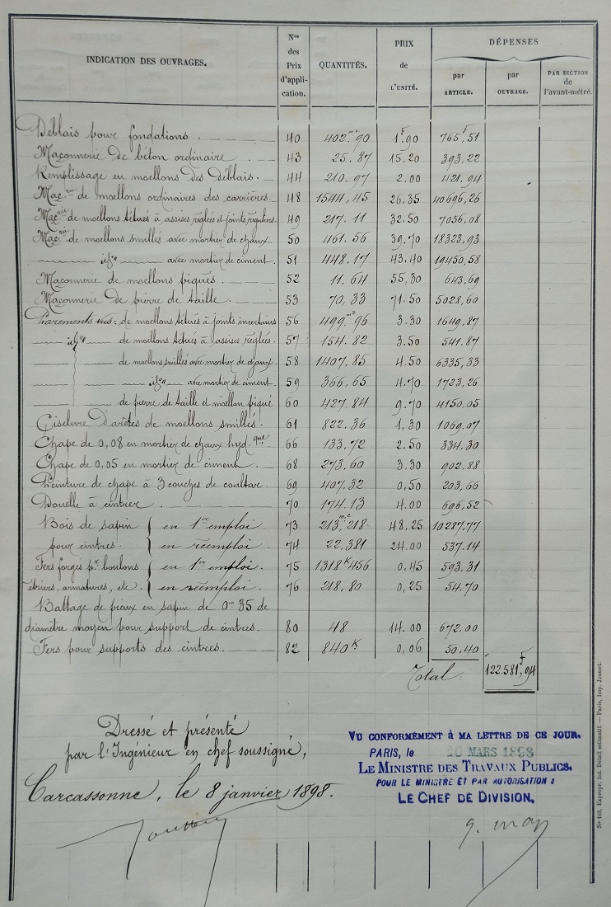